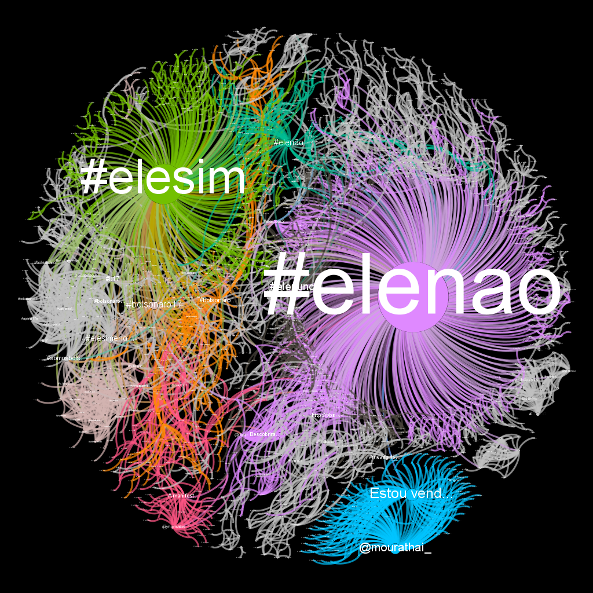
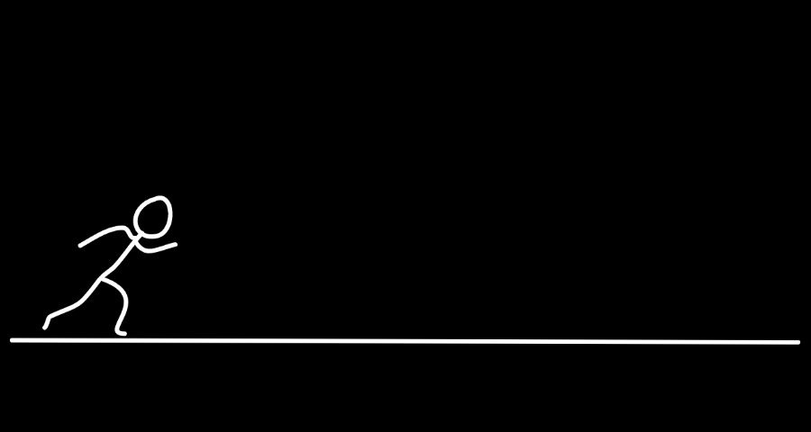
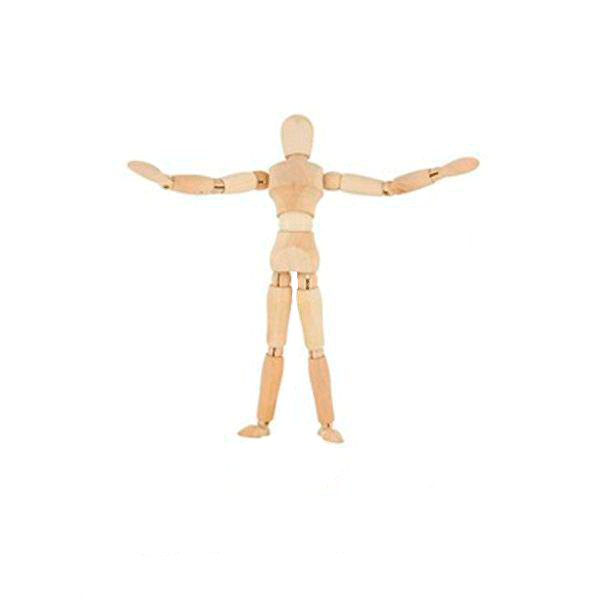
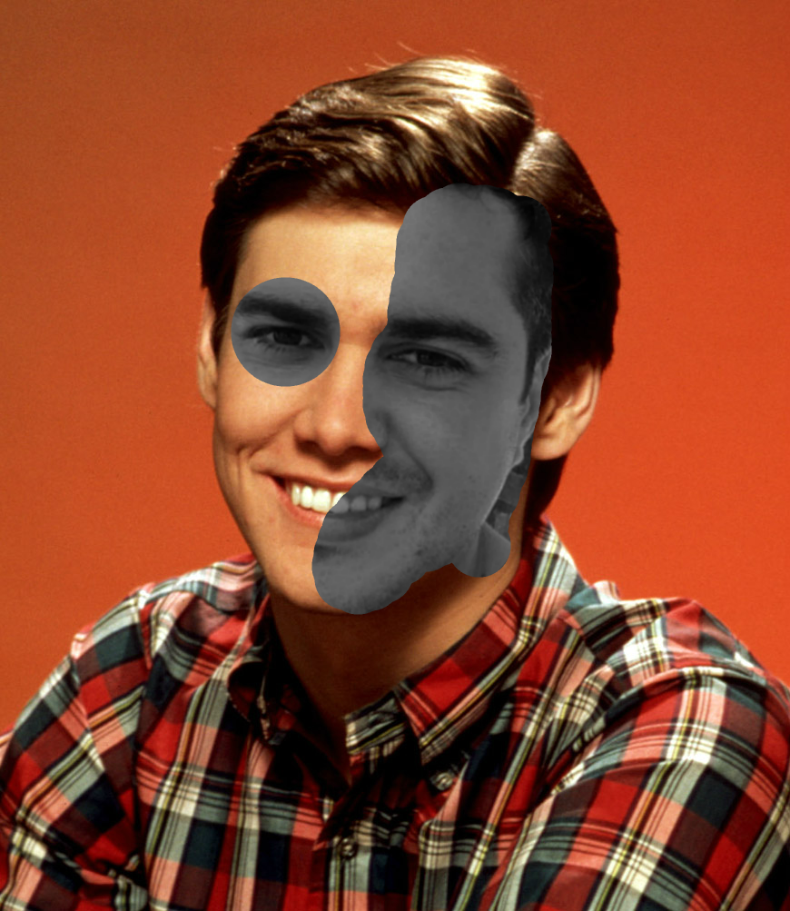

Análise da rede social twitter e o seu comportamento em torno do tema eleições 2018, abordando como termos específicos da pesquisa as hashtags #elesim, #elenao.
Os dados para esta pesquisa foram coletados através do software Gephi juntamente com o plugin TwitterStreamingImporter no dia 04 de outubro de 2018.
Foram obtidos 2.478 nós e 4.463 arestas no período de duas a três horas de mineração.

Atividade de animação quadro a quadro realizada na disciplina de Autoração Multimídia I do Curso de Sistemas e Mídias Digitais/UFC.

Efeito puppet warp aplicado na imagem utilizando o Pixlr (aplicativo online) realizado na disciplina de Autoração Multimídia I do Curso de Sistemas e Mídias Digitais/UFC.

Efeito aplicado em imagens onde se assemelham duas pessoas e se sobrepoem as imagens, criando o efeito. A imagem ao lado trata-se de Jim Carrey quando mais novo (em colorido) mesclado a uma foto minha (em preto e branco).
